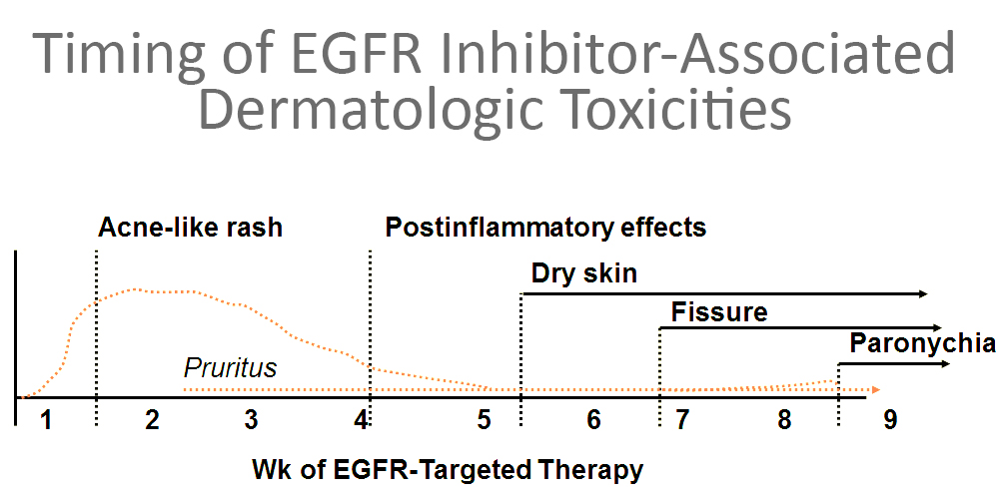
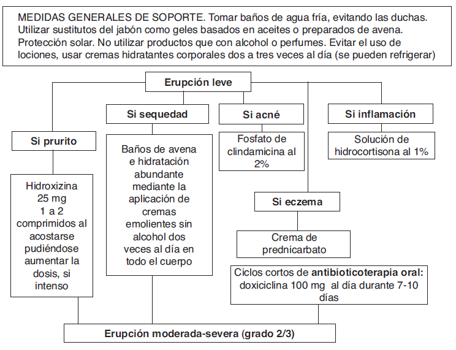

ICO 24h
MÓDULO 3 : Farmacia hospitalaria de dispensación ambulatoria en oncología
3.2.1 Reacciones cutáneas
Los fármacos que interactúan con el receptor del factor de crecimiento epidérmico (EGFR) producen efectos adversos a nivel dermatológico (acné, rash, xerosis, prurito, perionixis y paroniquia, cambio del color de pelo, tricomegalia) en más del 70% de los pacientes tratados. La frecuencia y el momento en el que aparecen estos efectos varía dependiendo del fármaco.
Evolución de los efectos secundarios a nivel dermatológica:
Para prevenir la erupción cutánea y rásh es recomendable utilizar jabones suaves sin alcohol, hidratación de la piel con cremas emolientes de urea, lanolina, avena. A veces ante esta toxicidad cutánea es necesario el tratamiento con corticoides tópico (betametasona, prednicarbamato), antibióticos (eritromicina, clindamicina, doxiciclina) y antihistamínicos (loratadina, ebastina, hidroxicina) si existe prurito.
Medidas generales en caso de erupción:
El síndrome mano-pie es una toxicidad característica de la capecitabina (profármaco del 5-Fluorouracilo), aunque este efecto también pueden producirlo las terapias dirigidas como sunitinib, sorafenib, regorafenib. Es una reacción frecuente en las palmas de las manos y de los pies, que pueden presentar enrojecimiento, tirantez, hipersensibilidad, dolor, ulceración que puede llegar a dificultar las actividades cotidianas diarias.. Lo más importante para prevenir esta toxicidad es la hidratación con la utilización de cremas con alto contenido de urea en las plantas de las manos y los pies, utilizar calcetines de algodón y calzado cómodo para evitar presión en los pies, no utilizar productos abrasivos (lejía, salfumán).